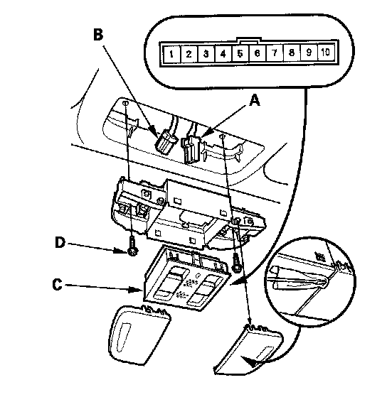

Interior Light Switch: Service and Repair
Interior Light Switch Test/ReplacementWith moonroof
NOTE: The interior light switch is built into the moonroof switch, and it switches the front individual map lights between the OFF and DOOR positions.
1. Remove the front individual map lights.

2. Disconnect the moonroof switch 10P connector (A) and map light 3P connector (B).
3. Remove the moonroof switch (C).
4. At the moonroof switch 10P connector, check for continuity between the No.1 and No.8 terminals.
- There should be continuity when the interior light switch is in the DOOR position.
- There should be no continuity when the interior light switch is in the OFF position.
5. If the continuity check is not as specified, replace the illumination bulb (D) or the switch.
6. Install the switch and light in the reverse order of removal.